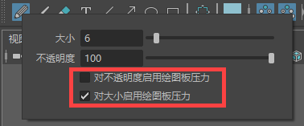

可以将压力敏感型绘图板（例如 Wacom 或 MS Surface）与 Blue Pencil 工具结合使用。为获得最佳结果，请确保已安装最新的驱动程序。
将绘图板与 Blue Pencil 结合使用时，可以执行以下操作：
- 使用光笔橡皮擦来擦除笔划（与 Maya 中其他基于笔刷的工具不同）
- 通过增加或减小绘图板上的压力，调整“笔刷”(Brush)和“铅笔”(Pencil)工具的笔划厚度
- 通过增加或减小绘图板上的压力，调整“笔刷”(Brush)和“铅笔”(Pencil)工具的笔划不透明度
- 使用衰减曲线为笔刷、铅笔和橡皮擦工具创建自定义笔划
提示： 对绘图板进行故障排除时，请尝试使用不同的 API 设置；切换到其他 API 可能会获得更好的结果。
将绘图板压力设置与 Blue Pencil 结合使用
右键单击“铅笔”(Pencil)“笔刷”(Brush)工具（位于 Blue Pencil 工具栏中）上单击鼠标右键，然后激活“对不透明度启用绘图板压力”(Enable Tablet Pressure for Opacity)和“对大小启用绘图板压力”(Enable Tablet Pressure for Size)选项。

铅笔绘图板压力设置
可以在界面首选项(Interface Preferences)的“绘图板 API”(Tablet API)部分中切换绘图板 API。（请参见(Windows > Settings/Preferences > Preferences > Interface Preferences)）另请参见绘图板设置。
使用衰减曲线创建自定义 Blue Pencil 笔划
- 在 Blue Pencil 处于活动状态时，双击“工具箱”(Tool Box)的“上次使用的工具”(Last Used)工具区域中的 Blue Pencil 图标，或单击 Maya 右上角的“工具设置”(Tool settings)按钮，打开“Blue Pencil 工具设置”(BluePencil Tool Settings)。
- 单击“绘图”(Drawing)区域中的“铅笔”(Pencil)、“笔刷”(Brush)或“橡皮擦”(Eraser)
 图标，以展开工具的设置。
图标，以展开工具的设置。
- 展开“铅笔”(Pencil)、“笔刷”(Brush)或“橡皮擦”(Eraser)选项区域，显示“衰减”(Falloff)设置，然后单击“启用数字化仪压力”(Enable Tablet Pressure)。
- 从衰减曲线下的选项中选择衰减预设，或通过更改“衰减”(Falloff)栅格中的曲线并修改设置来创建自己的衰减预设。请参见使用衰减曲线自定义 Blue Pencil 笔刷。
- 单击“保存自定义曲线”(Save Custom Curve)，将曲线添加到“自定义曲线”(Custom Curve)库。
Blue Pencil 绘图板限制
使用压力敏感型绘图板和 Blue Pencil 时，存在以下已知限制：
- 在启用 Windows Ink 的 Windows 操作系统上使用绘图板时存在两个问题：
- 绘制笔划的开始处存在滞后。
- 在视口中使用手写笔单击不起作用，例如，绘制点或打开文本框。
如果发生上述任一事件，请将界面首选项中的“绘图板 API”(Tablet API)设置为“Wintab”。